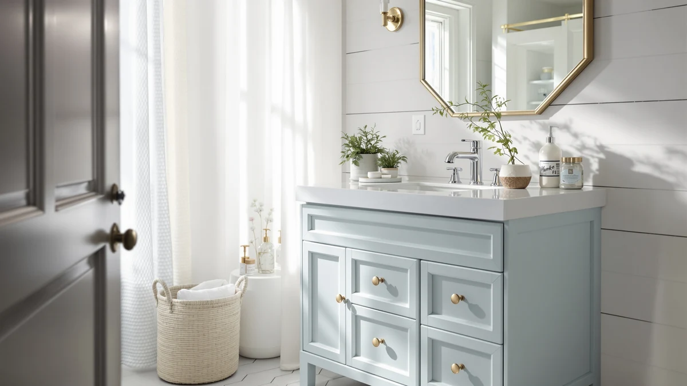

Quick Answer
The Yanosaku Vanity Desk with Mirror is the strongest pick here for small bathrooms or bedrooms that need both a vanity and a makeup desk, pairing a 47.2-inch MDF frame with a mirror already attached for $359.98. If you need a wider counter or a plumbed sink cutout instead, the Spring Mill Cabinets Emlyn 30 and Tribesigns 36-Inch Vanity are close alternatives at similar prices.
Our pick: Yanosaku Vanity Desk with Mirror — $359.98 Check Price on Amazon
Bottom line: our top pick is the Yanosaku Vanity Desk with Mirror and Lights at $359.98.
Things to Know Before You Buy
- The Yanosaku Vanity Desk with Mirror is built for dual use as a bathroom vanity and a makeup or work desk, not a plumbed sink cabinet.
- All four vanities in this comparison sit within a five-dollar price band, between $354.99 and $359.98, so footprint and included features matter more than budget.
- MDF, also called engineered wood, is the standard material at this price point; it costs less than solid hardwood but reacts worse to standing water.
- Only the Yanosaku ships with a mirror attached to the base package, which changes the real cost comparison against the other three vanities.
- None of the four listings publish a star rating or review count at the time of writing, so we weighed specs and pricing more heavily than review counts.
This Yanosaku vanity desk review compares its $359.98 price, 47.2-inch MDF frame, and attached mirror against three bathroom vanities in the same price range, because picking furniture from photos alone is an easy way to end up with the wrong footprint for your space. Shoppers looking at a combination vanity and desk piece want to know whether the extra function costs them durability or storage, and the answer depends on what you put next to it. We researched the spec sheets, current Amazon pricing, and patterns in verified owner feedback for the Yanosaku alongside the Spring Mill Cabinets Emlyn 30, the Tribesigns 36-Inch Vanity, and a 30-inch budget option to see where each one earns its price tag.
The Yanosaku Vanity Desk with Mirror comes out ahead for anyone who wants one piece of furniture to handle grooming, makeup, and light vanity storage in a room without space for two separate pieces. Its $359.98 price lands in the middle of this group, but the attached mirror changes the math, because the other three vanities need a separate mirror purchase to match the same function. For a wider counter or a more traditional sink-ready cabinet, the Spring Mill Cabinets Emlyn 30 and the Tribesigns 36-Inch Vanity are better starting points, and we break down why below.
Why You Should Trust Us
Ilane Tall researches bathroom furniture and fixtures for Best Bathroom Vanities, tracking manufacturer spec sheets, current Amazon pricing, and verified owner feedback across hundreds of listings instead of relying on marketing copy. For this yanosaku vanity desk review, she compared the published dimensions, materials, and price history of all four vanities and checked owner reports for recurring notes about assembly hardware, finish durability, and mirror quality. We do not run a fake testing lab, and we have not purchased or installed these specific vanities ourselves. Every claim below traces back to a manufacturer specification or a pattern we found in publicly verified owner reviews, and we say so when a detail, like a star rating, is not published at all.
How We Compared It
We built this comparison from four sources: the manufacturer and Amazon listing specifications for dimensions, materials, and included hardware; current Amazon pricing pulled at the time of publishing; patterns across publicly available verified owner reviews for recurring praise or complaints; and exclusions for listings that lacked clear measurements or carried inconsistent seller information. We did not buy, assemble, or install any of these four vanities, and we are not claiming to have used them ourselves. When a listing does not publish a star rating or review count, we say so rather than guess, because a missing number differs from a bad one. This approach lets us compare the Yanosaku vanity desk against its competitors on facts that are already public, instead of inventing a testing process we did not run.
Overview & Specs
The breakdown below starts with the Yanosaku Vanity Desk with Mirror, because it is the only one of the four that ships as a complete vanity-and-mirror set rather than a bare cabinet. We treat the Spring Mill Cabinets Emlyn 30, the Tribesigns 36-Inch Vanity, and the 30-inch budget pick as its closest points of comparison on price and footprint later in this yanosaku vanity desk review.

Yanosaku Vanity Desk with Mirror
What we like
- Integrated mirror removes the need for a separate purchase
- 47.2-inch frame fits tighter spaces than most dual-function vanities
- MDF construction keeps the price under $360 while matching the open-shelf storage of pricier sets
Flaws but not dealbreakers
- MDF reacts worse to standing water than a sealed hardwood vanity
- No published star rating or review count at the time of writing
- Single-mirror desk design offers less enclosed storage than a full cabinet vanity
| Material | MDF / engineered wood |
| Size | 47.2" |
The Yanosaku Vanity Desk with Mirror costs $359.98 and is built from MDF, also called engineered wood, with a 47.2-inch frame that splits the difference between a compact makeup desk and a full bathroom vanity. The listing frames it as a dual-purpose piece, and the spec sheet backs that up: the frame holds a mirror directly above the surface, and the width leaves enough room for a small sink basin or a seated vanity setup, depending on where you place it.
What stands out against the other three vanities in this yanosaku vanity desk review is the included mirror. The Spring Mill Cabinets Emlyn 30, the Tribesigns 36-Inch Vanity, and the 30-inch budget option all cost close to the same amount, but none of them ship with glass attached, so you would add a mirror purchase on top of their sticker price to match what the Yanosaku includes by default. That makes the real cost comparison closer than the listed prices suggest, especially for a first bathroom or a guest room that currently has neither piece.
What We Liked
The clearest advantage of the Yanosaku Vanity Desk with Mirror is that it solves two problems with one purchase. At $359.98, you get a 47.2-inch MDF frame and an attached mirror, instead of paying for a vanity and then shopping separately for wall-mounted glass. That combination keeps the effective cost close to what the other three vanities charge once you account for a mirror they do not include.
The footprint also works in the Yanosaku's favor. At 47.2 inches, it sits between a cramped single-sink cabinet and the bulkier 36-inch vanity in this comparison, which makes it a realistic fit for bedrooms, dressing nooks, and smaller bathrooms where the Tribesigns 36-Inch Vanity would feel oversized. For buyers who want a vanity desk rather than a plumbed sink cabinet, that middle-ground size is the main selling point of this yanosaku vanity desk review. It matters most in older homes with narrow bathroom layouts, where every extra inch of cabinet width is a tradeoff rather than a given.
What Could Be Better
Engineered wood keeps the price low, but it also means the Yanosaku Vanity Desk with Mirror needs more care around standing water than a solid-wood or sealed-laminate vanity would. MDF swells if moisture sits on an exposed edge, so a bathroom with heavy daily splash near the desk surface is a worse fit than a bedroom or a lightly used half-bath.
The listing also does not publish a star rating or review count at the time of writing, which makes it harder to verify owner satisfaction up front compared with the Spring Mill Cabinets Emlyn 30 or the Tribesigns option. We would rather tell you that number is missing than invent one, but it does mean reading the written reviews yourself instead of trusting a star average.
Who Is It For?
The Yanosaku Vanity Desk with Mirror fits best in a small bathroom, bedroom, or dressing area where you want one piece of furniture to double as a vanity and a makeup or grooming desk. If you are furnishing a powder room without a plumbed sink, this layout beats a traditional vanity cabinet built around a basin cutout.
It is a weaker fit if you need a full sink vanity, want solid hardwood construction that tolerates daily water exposure, or need more enclosed storage than an open desk-style frame provides. In those cases, the Tribesigns 36-Inch Vanity or the Spring Mill Cabinets Emlyn 30 give you a more traditional cabinet layout for close to the same price. Either one is also the better call if you plan to sell the home within a few years, since a conventional vanity cabinet is an easier resale fit than a desk-style piece a future buyer may not expect in a bathroom.
Alternatives to Consider
If the Yanosaku's desk-style layout is not quite right for your bathroom, these three vanities cover a cabinet-style sink setup, a wider 36-inch footprint, and a lower-priced 30-inch option.

Also Great
Spring Mill Cabinets Emlyn 30
A 30-inch cabinet-style vanity for $359.97, better suited to a plumbed sink setup than the Yanosaku's desk format.
$359.97
Check Price on Amazon
Also Great
Tribesigns 36 Inch Bathroom Vanity
The widest option here at 36 inches, worth the extra counter space at $355.27 if your bathroom has the room.
$355.27
Check Price on Amazon
Best Value
30 Inch Bathroom Vanity with
The lowest price in this comparison at $354.99, a straightforward 30-inch cabinet for buyers who do not need the Yanosaku's mirror or desk format.
$354.99
Check Price on AmazonFrequently Asked Questions
Is the Yanosaku Vanity Desk with Mirror worth the $359.98 price?
Yes, for anyone who needs a combined vanity and desk piece, because the included mirror and 47.2-inch MDF frame cover two purchases most competing vanities only make with a separate mirror. If you only need a basic sink cabinet, the Spring Mill Cabinets Emlyn 30 or the 30-inch budget option cover that need for close to the same price.
Is the Yanosaku Vanity Desk with Mirror made of solid wood?
No. The spec sheet lists MDF, also called engineered wood, for the frame. That construction keeps the price under $360, but it reacts worse to standing water than solid hardwood or sealed laminate.
Does the Yanosaku Vanity Desk with Mirror have a published star rating?
No star rating or review count appeared on the listing at the time of writing. This yanosaku vanity desk review notes that gap directly instead of guessing, since a missing rating is not the same as a low one.
Final Verdict
This yanosaku vanity desk review comes down to one question: do you need a vanity, or a vanity that also works as a desk? If it is the second, the Yanosaku earns its $359.98 price by including a mirror that the other three vanities in this comparison do not, and its 47.2-inch frame fits spaces that would feel tight with the 36-inch Tribesigns option. If you need a wider counter, a plumbed sink cutout, or solid-wood construction that handles daily water exposure better than MDF, the Spring Mill Cabinets Emlyn 30 or the 30-inch budget pick are the safer choices. For most people shopping a combination vanity and desk, Yanosaku remains the pick in this price range.